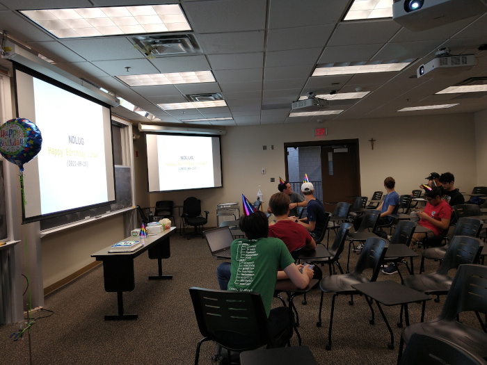
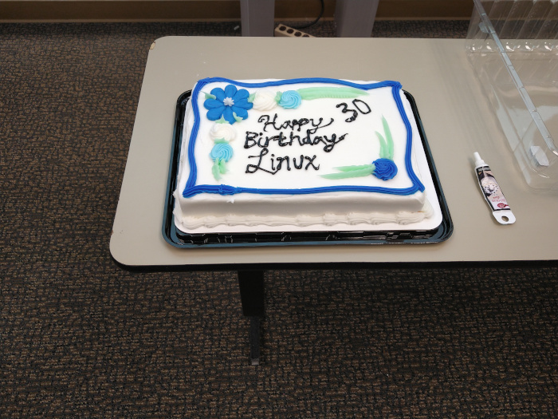

After a long hiatus, we held our first in-person meeting of the year. The theme: celebrating the 30th anniversary of Linus Torvald’s email announcing his now-famous operating system. Professor Bui kicked off the meeting with a brief presentation about the club, its values, and the origins of Linux and free software. Then our president, Nolan, outlined some upcoming club events, such as an internship panel and an “open sauce in the wild” meeting. Officers led a discussion about members’ favorite Linux memories, which ranged from triumphant first installs on bare metal to PEBKAC-induced system breakages. No birthday party is complete without a cake (or party hats!), which was promptly cut and consumed over delightful conversation. With a headcount of 15 and the enthusiasm of ten times that, it’s safe to call this meeting a success.

